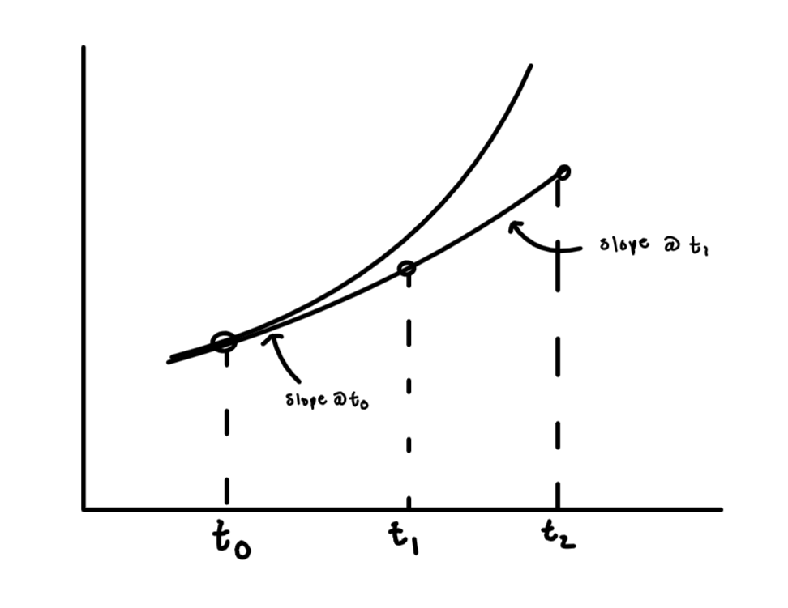

5.8. Numerical solution methods#
Some ODEs are hard (or impossible!) to solve analytically… or maybe you just don’t want to! Numerical approximations to the solution can be very valuable in these cases.
For example, let’s solve the initial value problem:
using Euler’s method with a step size \(\Delta t = 0.2\). First, rewrite in explicit form:
Then, form a table and update
\(n\) |
\(t\) |
\(y\) |
\(f\) |
|---|---|---|---|
0 |
0 |
0 |
0 |
1 |
0.2 |
0 |
0.2 |
2 |
0.4 |
0.04 |
0.44 |
3 |
0.6 |
0.128 |
0.728 |
4 |
0.8 |
0.274 |
1.074 |
5 |
1.0 |
0.489 |
Let’s compare our numerical result to the analytical solution to the same ODE. This solution can be obtained using an integrating factor:
Integrate by parts:
So the general solution is:
Solve for c using the initial condition:
so
Comparing the numerical and analytical solutions at the same time points by computing the absolute error between them gives:
\(t\) |
Numerical |
Analytical |
Error |
|---|---|---|---|
0 |
0 |
0 |
0 |
0.2 |
0 |
0.021 |
0.021 |
0.4 |
0.04 |
0.092 |
0.052 |
0.6 |
0.128 |
0.222 |
0.094 |
0.8 |
0.274 |
0.426 |
0.152 |
1.0 |
0.489 |
0.718 |
0.229 |
The error increases as more timesteps are run due to accumulation of error. A smaller timestep typically produces a better solution, but at the cost of doing additional calculations. We will discuss next how the error depends on the step size.
5.8.1. Error in approximation#
Because we are using truncated Taylor series, we accrue an error:
{kind=link}
The error in a single step is \(O(\Delta t^2)\). This is called the local error. To cover a finite time t, \(t/\Delta t\) steps are required so the global (total) error is \(O(\Delta t)\). To improve accuracy, you should decrease \(\Delta t\), but this takes more work. Some \(\Delta t\) will also totally fail! This is the field of numerical stability (not covered here).
5.8.2. Skill builder problems#
Solve \(y' = y + 5 \sin(2\pi t)\) with \(y(0) = 1\) using Euler’s method with two step sizes: \(\Delta t = 0.1\) and 0.2 up to \(t = 1\). Compare the accuracy of each to the analytical solution of the same ODE for \(y(1)\).
Solution
The ODE is already in explicit form, so \(f(t, y) = y + 5 \sin(2\pi t)\).
Euler’s method with \(\Delta t = 0.1\):
\(n\)
\(t\)
\(y\)
\(f\)
0
0.0
1.000
1.000
1
0.1
1.100
4.039
2
0.2
1.504
6.257
3
0.3
2.130
6.895
4
0.4
2.818
5.757
5
0.5
3.394
3.394
6
0.6
3.733
0.795
7
0.7
3.813
-0.942
8
0.8
3.719
-1.037
9
0.9
3.615
0.676
10
1.0
3.683
gives \(y(1) \approx 3.683\).
Euler’s method with \(\Delta t = 0.2\):
\(n\)
\(t\)
\(y\)
\(f\)
0
0.0
1.000
1.000
1
0.2
1.200
6.955
2
0.4
2.591
5.330
3
0.6
3.657
0.576
4
0.8
3.772
-1.155
5
1.0
3.322
gives \(y(1) = 3.322\).
To find the analytical solution, note that this is a linear first-order ODE
(5.152)#\[\begin{equation} y' - y = 5 \sin(2\pi t) \end{equation}\]with \(p = -1\) and \(r = 5 \sin (2\pi t)\). The integrating factor and required integral are:
(5.153)#\[\begin{align} F &= e^{\int p \d{t}} = e^{-t} \\ \int F r \d{t} &= 5 \int e^{-t} \sin(2\pi t) \d{t} \\ &= \frac{5 e^{-t}}{4\pi^2 + 1}\left[ -\sin(2\pi t) - 2\pi \cos(2\pi t)\right] \end{align}\]where the integral was evaluated using a table of integrals. Then, solve for y
(5.154)#\[\begin{align} y &= \frac{1}{F} \left[\int F r \d{t} + c \right] \\ &= -\frac{5}{4\pi^2 + 1} \left(\sin(2\pi t) + 2\pi \cos(2\pi t)\right) + c e^{t} \end{align}\]Finally, apply the initial condition:
(5.155)#\[\begin{equation} y(0) = \frac{-10 \pi}{4\pi^2 + 1} + c = 1 \end{equation}\]so
(5.156)#\[\begin{equation} y = \left(1 + \frac{10\pi}{4\pi^2 + 1}\right) e^{t} - \frac{5}{4\pi^2 + 1} \left[\sin(2\pi t) + 2\pi \cos(2\pi t)\right] \end{equation}\]Evaluating this at \(t = 1\) gives \(y(1) = 4.052\).
The absolute error is 0.369 for \(\Delta t = 0.1\) and 0.730 for \(\Delta t = 0.2\). Hence the error decreases by about a factor of 2 when \(\Delta t\) is also decreased by a factor of 2.